# Npgsql multiplexing A high-performance database driver model --- ## whoami * Shay Rojansky * Engineer at Microsoft, part of the .NET data team * Lead dev of Npgsql, PostgreSQL driver for .NET * Linux guy * Based in Berlin Note: Started with Slackware around 1995 --- ## Who is Npgsql? * .NET open-source driver for PostgreSQL * There's also an EF Core provider, but we'll focus on the low-level (ADO.NET). * Bottom of the stack - beneath us is the .NET runtime <!-- .element: class="fragment" --> * Supposed to be a boring component! <!-- .element: class="fragment" --> --- ## Performance TechEmpower Round 20 (Feb 2021)  <div class="fragment">... running on Linux with PostgreSQL</div> Note: * Already old (Feb 2021) * Does not include newer improvements for .NET 6 * Many of these are experiments, not full-fledged web frameworks etc. * The first Fortunes MySQL entry is 44th place --- ## What's this talk about? * Multiplexing is an experimental perf feature released in November 2020 (Npgsql 5.0). * Other database drivers do this, but not in the .NET world. <!-- .element: class="fragment" --> * Connection pooling, network buffering, coalescing, and a whole lot of low-level perf goodness. <!-- .element: class="fragment" --> --- # Let's begin! --- # Traditional connection pooling --- ## Typical low-level DB code ```csharp await using var connection = new NpgsqlConnection("..."); await connection.OpenAync(); await using var command = new NpgsqlCommand("SELECT * FROM foo", connection); await using var reader = await command.ExecuteReaderAsync(); // Consume results from the reader ``` --- ## Connection pooling * Opening a physical connection every time is slow. * Network roundtrip(s) (TLS!) * In PG, spawn process for each connection * Like every perf problem in the universe, the answer is caching, or connection pooling <!-- .element: class="fragment" --> --- ## Connection pooling flow  --- ## Where to pool? * #1: In .NET: in-process pooling, in the driver. * #2: Java: the pool is a separate standard API. <!-- .element: class="fragment" --> * #3: Out-of-process (pgbouncer2, pgpool, odyssey). <!-- .element: class="fragment" --> * In-process is faster (zero network overhead) and easier to set up. <!-- .element: class="fragment" --> * External allows pooling across multiple app instances. <!-- .element: class="fragment" -->  <!-- .element: class="fragment" --> Note: * The connection pool is the one component dealing with concurrency and shared mutable state. * I used to think the Java pooling API model was great, but we'll see that it has drawbacks. --- ## Maximum connections * The pool always as a max connection size, setting an upper bound on server resources. <!-- .element: class="fragment" --> * An attempt open when saturated waits until someone else releases (or until timeout). <!-- .element: class="fragment" -->  <!-- .element: class="fragment" --> Note: * Max Pool Size is 100 by default * Very important to have a hard limit (server resources). Compare with memory object pooling. --- # Let's evolve this! --- ## Empty trains * Physical connections are exclusively "locked" for the duration of the command. * We're sending out trains with only a single passenger each. <!-- .element: class="fragment" data-fragment-index="1" -->  <!-- .element: class="fragment" data-fragment-index="1" --> --- ## Fill trains with passengers * We can fill the same train with multiple unrelated passengers ... * .. as long as they arrive around the same time. <!-- .element: class="fragment" --> * Benefits: <!-- .element: class="fragment" --> * Less TCP packet fragmentation * Less I/O system calls (both client and server) <!-- .element: class="fragment" --> --- ## Without multiplexing  --- ## With Multiplexing <div class="r-stack">  </div> --- ## Busy trains * The more commands we pack into the same write, the more we save on overhead. <!-- .element: class="fragment" --> * In TechEmpower Fortunes, we see around 23 commands per write. * For this to work, lots of commands need to be submitted simultaneously <!-- .element: class="fragment" --> * Optimizes the massive load scenario --- ## Coalescing and Nagling * This is a form of implicit batching, or *coalescing*. * Nagle's algorithm: TCP/IP optimization to coalesce together small writes into a single packet. <!-- .element: class="fragment" --> * Nagling works on a single TCP socket; we combine from multiple query producers. <!-- .element: class="fragment" --> * Nagling compensates for poor application I/O practices (no buffering). <!-- .element: class="fragment" --> * Typically disabled (TCP_NODELAY), because increases latency. --- # Advantage #1: ## Coalescing --- ## Perf benefits <ul> <li>Without multiplexing, the optimal RPS in TechEmpower Fortunes is <span style="color: red">213,689</span>.</li> <li class="fragment">With multiplexing: <span style="color: red">454,254</span> (112% improvement).</li> <li class="fragment">... but it's not just about the coalescing :)</li> </ul> --- ## Saturation * Remember: in traditional pooling, we wait when saturated - all connections are locked. * In multiplexing, we can do better: continue pushing commands to the database, even if they're busy! <!-- .element: class="fragment" --> * We call this "overcapacity mode". <!-- .element: class="fragment" --> --- ## Under capacity Use only idle connection as long as we can...  --- ## Over capacity ... but keep pushing commands into busy connections  --- ## Advantages * Pipelining: get commands to the DB faster, even while it's still processing previous commands. * As long as the DB is processing faster than we send, we're pipelining efficiently. <!-- .element: class="fragment" --> * If we send faster than the DB processes, eventually TCP buffers get full (TCP zero window). <!-- .element: class="fragment" --> * And we block, just like before. Note: If we get to TCP zero window, all bets are off - the DB is totally overloaded. --- # Advantage #2: ## Better handling of saturation --- ## How many DB connections should I have? * The answer depends on server resources, especially number of cores. <!-- .element: class="fragment" --> * Also: are queries going to be doing lots of I/O? <!-- .element: class="fragment" --> * If we increase (in-use) connections too much, we start to cause useless context-switching. <!-- .element: class="fragment" --> Note: * Make it clear that TechEmpower Fortunes does very little I/O. --- ## Less connections * Thanks to multiplexing over-capacity, we can lower the connection count and not starve client-side. * Do more with less: far more efficient use of physical connections. <!-- .element: class="fragment" --> * This helps the DB by reducing context switching. <!-- .element: class="fragment" --> * Even at extremely low connection counts, we're still very efficient. <!-- .element: class="fragment" --> * The multiplexing pool acts as a sort of "backpressure" for connections. <!-- .element: class="fragment" --> --- ## Multiplexing benefits 1. Coalescing (less overhead) 2. Over-capacity mode (saturation) 3. Reduce number of connections needed
Showdown!
Non-multiplexing
Multiplexing
# We've talked about the good... ## ... now let's talk about the bad. --- ## Statelessness * Cannot do anything that involves connection state... * ... especially transactions. <!-- .element: class="fragment" --> * Can still exclusively rent out connections, as before. <!-- .element: class="fragment" --> Notes: * Other examples: temp tables, session variables... --- ## Head of line blocking * We get query results from the DB in the same order we sent them, FIFO. <!-- .element: class="fragment" --> * Processing the results of a later query can only happen when earlier results were processing. <!-- .element: class="fragment" --> * A slow query (or client-side processing!) can block other, unrelated producers. <!-- .element: class="fragment" --> Note: * Resultset buffering: but memory. --- ## Some conclusions * Don't over-parallelize! * Stop thinking about connections! We just have database command producers. <!-- .element: class="fragment" --> * Multiplexing relies on an in-process (and probably in-driver) pool. <!-- .element: class="fragment" --> * Remember: the perf numbers we've seen are TechEmpower benchmarks, massive concurrent load. <!-- .element: class="fragment" --> * This is all still a bit experimental! <!-- .element: class="fragment" --> Notes: * The in-process comment: .NET is (inadvertently) in a good place --- ## The Npgsql team A special thanks to <span style="color: red" >Nikita Kazmin</span> and <span style="color: red">Nino Floris</span> for their considerable work on multiplexing, and also to Brar Piening! --- Thank you! **Shay Rojansky** <http://roji.org>, @shayrojansky <img src="img/postgresql.png" width="120" />